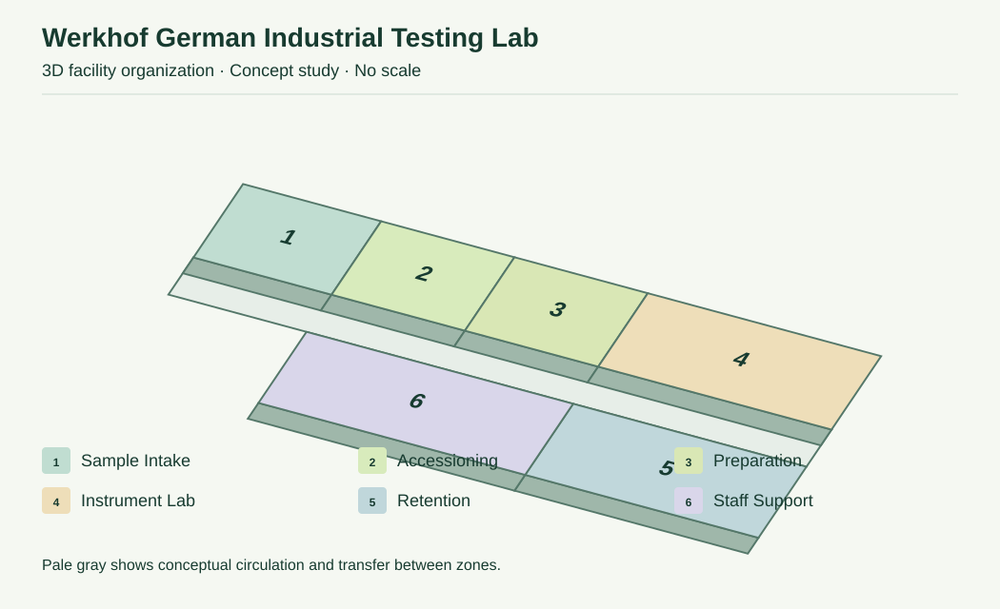
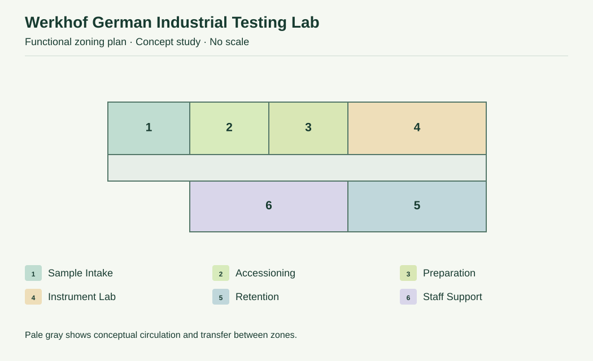
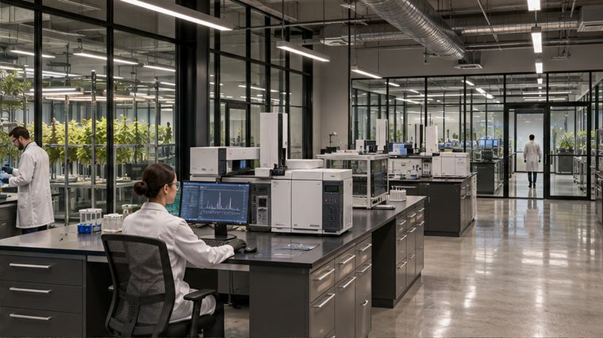
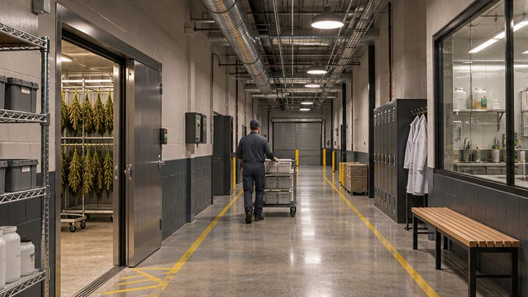
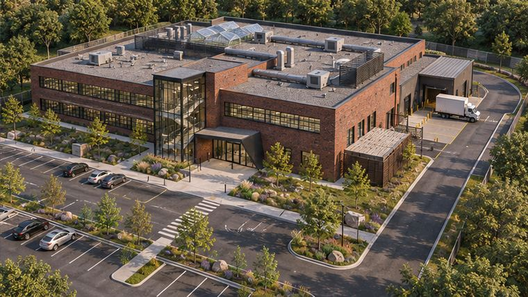
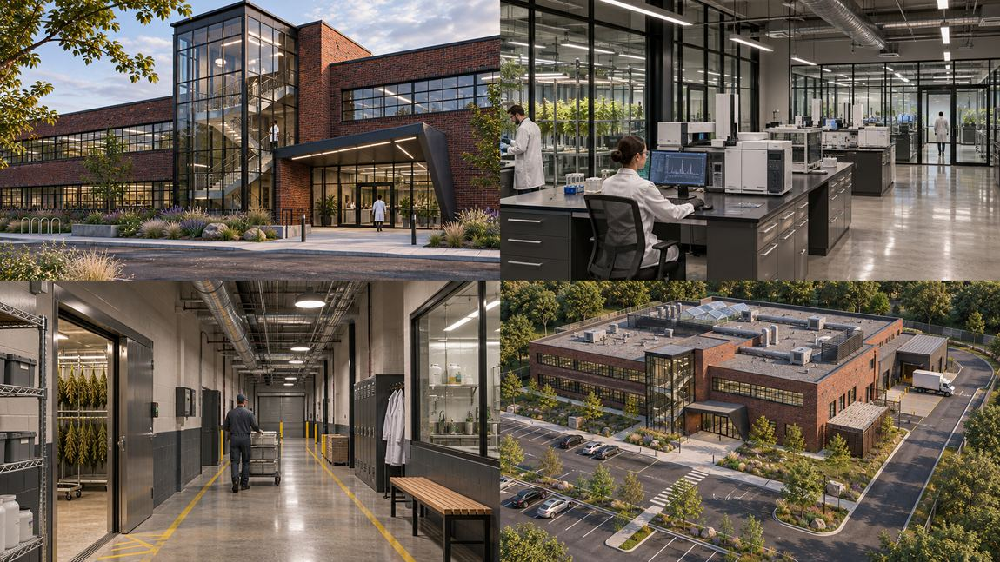

3D Facility Layout
Project-specific diagram illustrating the proposed functional relationships. Not a measured construction model.


Bauhaus-inspired analytical testing laboratory organized around sample custody and quality control.
Download Concept PDF ↓Project-specific diagram illustrating the proposed functional relationships. Not a measured construction model.

Functional zoning diagram - illustrative only; no surveyed dimensions, code determinations or filing use.

Generated concept views describing intended commercial character and support uses.


Illustrative landscape buffers, pedestrian access, parking and service-routing questions. Site survey, zoning and approvals require independent verification.

Complete, uncropped generated visual presentation. This is a fictional study and is not evidence of an actual project.

For portfolio demonstration and feasibility conversations only. No actual client records, permitted drawings or licensing clearances are shown.